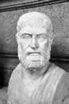

Şehrine ihanet eden bir kral olan Pausanias, efsanevi bir hain olduğu kadar başarılı bir generaldi de. Sparta’nın iki kralından biri olarak, MÖ 480-478 yılları arasında şehrin Persler’e karşı zaferle sonuçlanan efsanevi savaşlarına liderlik etmiştir. Ne var ki daha sonra adı Persler’le birlikte bir komploya karışmış ve Yunanlılar’a ihanet etmiştir.

İyi eğitimli ve acımasız savaşçıları ile ünlü Sparta, komployu MÖ 474’te açığa çıkarmıştır. Plan ortaya çıktıktan sonra kral, bir tapınağa sığınmış ve kapana kısıldığı bu yerde açlıktan ölmüştür.
Pausanias’ın ihaneti, Sparta ordusunun efsanevi disiplini bilindiğinden büyük bir şaşkınlık yaratmıştır. Sparta, Atina ile birlikte antik dünyanın süper güçleri arasında yer alıyordu. Atina’dan farklı olarak Sparta, büyük savaşçıları ile ünlüydü. Bunlar çocukluklarından itibaren savaş eğitimi alıyorlardı. Gerçekten de Sparta sanatçıları, filozofları ya da yazarları ile değil, savaşçıları ile tanınırdı.
Aslında hasım olmalarına rağmen Sparta ve Atina, Persler’e karşı ittifak kurdular. Ancak MÖ 480 yılında Thermopylae Savaşı’nda yenilgiye uğradılar. Savaşta Sparta’nın iki kralından biri öldürüldü. Pausanias, daha sonra Platea (MÖ 479) ve Bizans (MÖ 478) savaşlarında muzaffer Yunan ordularının yönetiminde bulundu.
Zaferden sonra Yunan ittifakı çözülmeye başladı. Şehir devletleri Atina ve Sparta’nın etrafında kümelenmeye başladılar. Pausanias’ın baskıcı idaresi bu devletlerin büyük bölümünü Atina’ya yaklaştırdı. Bu yetmezmiş gibi Pausanias’ın Perslerin safına geçmek için onlarla görüşmeler yaptığı ve Helot olarak bilinen Spartalı kölelere onunla birlikte savaşmaları karşılığında özgürlük vadettiğine dair dedikodular bardağı taşıran son damla oldu. İçinde yer aldığı komplonun ortaya çıkması Pausanias’ın çöküşünü de beraberinde getirdi.
Ek Bilgiler
1- Sparta MS 396’da Gotlar tarafından yok edildi. Günümüzdeki Sparta şehri, 1834 yılında kurulmuştur. Antik kalıntılara ulaşmak için 20. yy’ın başlarında kazı çalışmalarına başlanmıştır.
2- Pausanias’ın oğlu Pleistoanax, MÖ 458 yılından itibaren şehri aralıklarla da olsa tam elli yıl boyunca yönetti. Atinalılar’a karşı verilen Peloponez Savaşları onun döneminde başlamıştır.
3- Perslere karşı kurulan Atina-Sparta ittifakı, 2007 yapımı 300 Spartalı filmine konu olmuştur. Filmin yönetmeni Zack Snyder’dir (1966-).